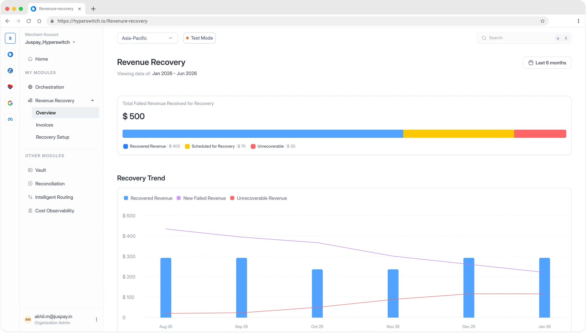
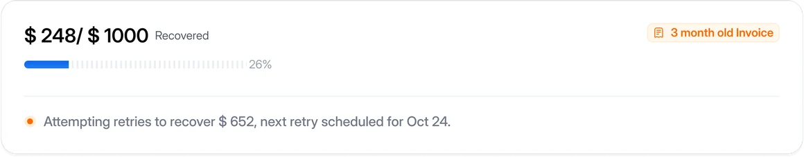
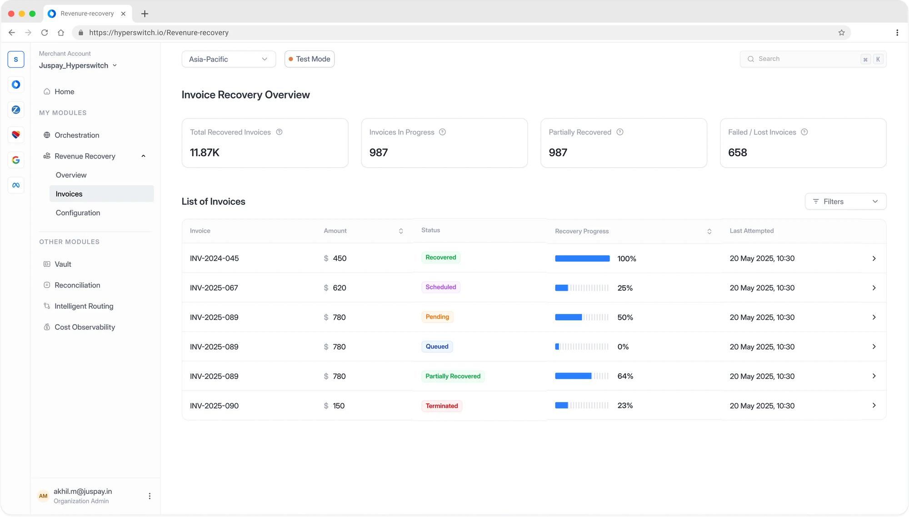
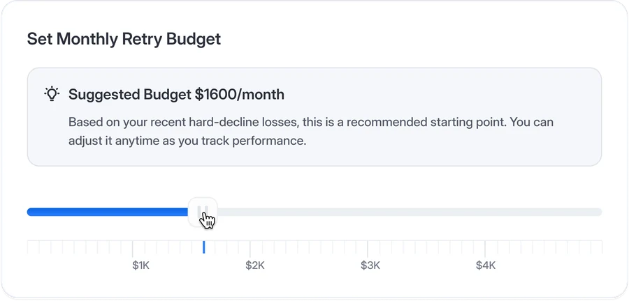
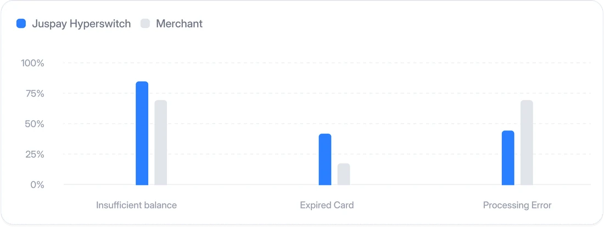
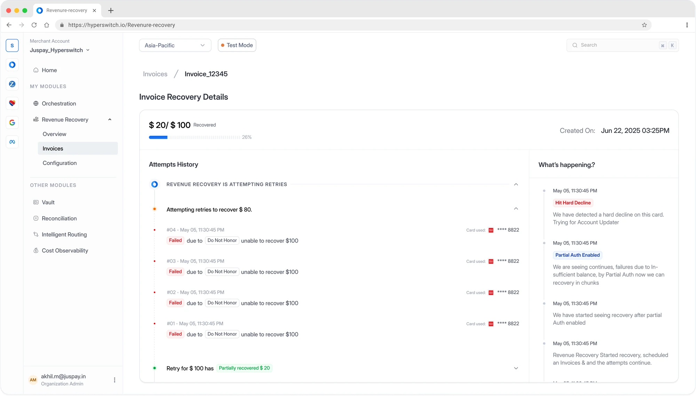
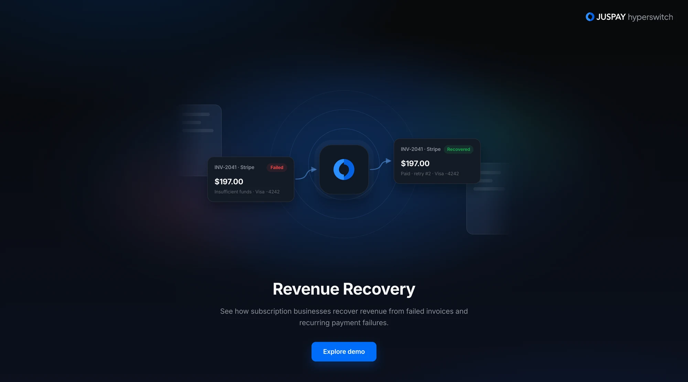

Fintech·Enterprise UX·B2B SaaS
Revenue Recovery
- Solo Product Designer
- Juspay Hyperswitch
- 0 → 1 Product
My contribution
Designed the Revenue Recovery product from 0→1, shaping the end-to-end experience and translating a complex recovery system into a clear, intuitive experience for merchants. Also collaborated with the Business Development team to create interactive product demos for merchant conversations.
Product context
What is Revenue Recovery?
Revenue Recovery helps subscription businesses recover failed recurring payments through automated retry strategies, reducing involuntary churn and lost revenue.






Interactive demo
See it recover a payment
Built for the business team, to help them walk merchants through the idea: failed invoices flowing in, getting retried, and coming back as revenue, before the product was in their hands.
Try the interactive demo